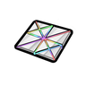
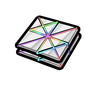
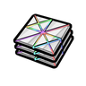
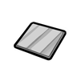
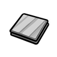
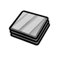

极致产出研究档本地天界鳞Miho_CelestialScale
强化工程级可塑成品 586 件:家具建筑487 · 防具34 · 穿戴件19 · 近战工具44 · 其它2
金属全谱469 + 石材件(墙/桌/祭坛)93 + 陶瓷件24
vs 塑料多 466 件(美狐动力爪、临时保险丝…);比钢少 443 件 —— 如 凤凰装甲、特种部队头盔… 都选不到它

生效·aHSK工业科研大修
生效·bHSK工业科研大修
生效·cHSK工业科研大修Things/Items/MihoSuperCeramic StackCount (254,254,254)
护甲 1.50/1/2 利钝 2/1.20 价值 30.5 质量 0.25 Bulk —
stuff Ceramic, Metallic, Metallic_Weapon, Steeled, Stony
HSK Ceramic
产自 천상비늘 합성(量子制造器/초월질량엮기)
源 HSK工业科研大修
Items_Ceramics.xml
冶铁链·无科研门槛无科研门槛(工作台 玻璃加工台)本地美狐陶瓷Miho_Ceramics
强化工程级可塑成品 586 件:家具建筑487 · 防具34 · 穿戴件19 · 近战工具44 · 其它2
金属全谱469 + 石材件(墙/桌/祭坛)93 + 陶瓷件24
vs 塑料多 466 件(美狐动力爪、临时保险丝…);比钢少 443 件 —— 如 凤凰装甲、特种部队头盔… 都选不到它

生效·aHSK工业科研大修
生效·bHSK工业科研大修
生效·cHSK工业科研大修Things/Items/MihoCeramic StackCount (205,205,205)
护甲 1.10/0.55/1.60 利钝 1/0.70 价值 5 质量 0.50 Bulk —
stuff Ceramic, Metallic, Stony
HSK Ceramic
产自 make high grade ceramic(玻璃加工台/Glass making II)
源 HSK工业科研大修
Items_Ceramics.xml